조경산업기사 (2020-08-22 기출문제)
1과목: 조경계획 및 설계
1. 18C 영국 조경의 특징이 옳지 않은 것은?
- 낭만주의 정원 양식이 시작되었다.
- 브리지맨(C. Bridgeman)이 스토우(Stowe)가든을 설계했다.
- 자연풍경식 정원 양식이 유행하였다.
- 테라스와 마운드를 만드는 것이 성행하였다.
(정답률: 66%)

2. 다음 중 고려시대 수목관련 정책 중 시행시기가 가장 빠른 것은?
- 수양도감 설치
- 산불방지법 반포
- 소나무 벌채금지법 반포
- 산림벌채금지와 나무심기 장려
(정답률: 57%)
3. 인도(印度) 정원의 특징에 대한 설명으로 가장 거리가 먼 것은?
- 중국, 일본, 한국과 같은 자연풍경식 정원이다.
- 회교도들이 남부 스페인에 축조해 놓은것과 흡사한 생김새를 갖고 있다.
- 녹음수가 중요시되었고 온갖 화초로 화단을 만들었으며, 연못에는 연꽃을 식재했다.
- 궁전이나 귀족의 별장을 중심으로 한 바그와 정원과 묘지(墓地)를 결합한 형태이다.
(정답률: 74%)
4. 백제 노자공(路子工)이 일본 궁궐에 오교(吳橋)와 함께 만든 것은?
- 방장산
- 봉황산
- 수미산
- 영주산
(정답률: 71%)
5. 장수를 기원하며 후원 담장과 같은 벽면에 십장생을 새겼던 궁궐 정원은?
- 창덕궁 대조원 후원
- 경복궁 사정전 후원
- 경복궁 자경전 후원
- 창덕궁 연경당 후원
(정답률: 71%)
6. 다음 중 자연풍경식 정원을 지향하며 ‘자연으로 돌아가자’고 주장한 사람은?
- 루소
- 데카르트
- 르 노트르
- 니콜라스 푸케
(정답률: 63%)
7. 일본의 대표적인 정원양식과 관련된 정원의 연결이 옳지 않은 것은?
- 다정(茶庭) - 고봉암(孤蓬庵)
- 고산수(枯山水) - 서천사(瑞泉寺)
- 회유식(回遊式) - 계리궁(桂離宮)
- 정토정원(淨土庭園) - 정유리사(淨留璃寺)
(정답률: 40%)
8. 과일을 심는 곳을 원(園), 채소를 심는 곳을 포(圃), 금수를 키우는 곳을 유(囿)로 풀이한 중국의 문헌은?
- 난정기
- 설문해자
- 시경대아편
- 춘추좌씨전
(정답률: 52%)
9. 도시공원 및 녹지 등에 관한 법률에 따른 어린이공원에 대한 기준이 옳지 않은 것은?
- 규모는 1,000m2 이하로 한다.
- 유치거리는 250m 이하이다.
- 공원시설 부지면적은 100분의 60 이하로 한다.
- 공원시설은 조경시설, 휴양시설(경로당 및 노인복지회관은 제외), 유희시설, 운동시설, 편익시설 중 화장실ㆍ음수장ㆍ공중전화실을 설치할 수 있다.
(정답률: 70%)
10. 그린벨트의 설치 목적 중 가장 중요한 것은?
- 도시를 일정 규모로 제한하기 위해
- 도시민에게 레크리에이션 장소를 제공하기 위해
- 도시재해 발생을 막고, 또 발생 시에 피난처로 사용하기 위해
- 도시민의 정서를 함양하고 식생활에 필요한 식품을 가까이에서 얻기 위해
(정답률: 67%)
11. 자동차와 보행자의 마찰을 피하고 안전하게 보행할 수 있도록 설치하는 것은?
- 몰(Mall)
- 패스(Path)
- 결절점(Node)
- 랜드마크(Landmark)
(정답률: 68%)
12. 정밀토양도에서 분류하는 토양명이 아닌 것은?
- 토양구(土壤區)
- 토양군(土壤群)
- 토양통(土壤統)
- 토양토(土壤土)
(정답률: 57%)
13. 순 인구밀도가 200인/ha이고, 주택 용지율이 60%일 때, 총 인구밀도는?
- 80인/ha
- 100인/ha
- 110인/ha
- 120인/ha
(정답률: 73%)
14. 환경영향평가 제도는 1969년 어느 국가의 “국가환경정책법”이 제정되면서 시작되었나?
- 영국
- 미국
- 프랑스
- 일본
(정답률: 68%)
15. 그림과 같이 3각법으로 투상된 정면도와 좌측면도에 가장 적합한 평면도는?
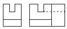
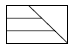
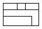
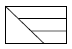
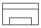
(정답률: 44%)
16. 다음 중 균형(Balance)에 관한 설명으로 가장 거리가 먼 것은?
- 균형에는 중심이 있다.
- 프랑스 정원에서 강조되었다.
- 균형을 결정하는 인자는 무게와 방향성이다.
- 대칭적 균형이란 고르게 정돈되지 않은 균형을 의미한다.
(정답률: 75%)
17. 다음과 같은 특징을 갖는 식물 색소는?
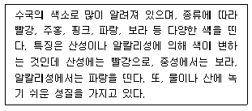
- 카로틴
- 클로로필
- 안토시아닌
- 플라보노이드
(정답률: 68%)
18. 표제란(Title Block)의 내부에 들어 갈 요소로 가장 거리가 먼 것은?
- 스케일
- 일위대가
- 도면번호
- 설계자 이름
(정답률: 76%)
19. 햇빛이 밝은 야외에서 어두운 실내로 이동할때 빨간색은 점점 어둡게 사라져 보이고 파란색 계열이 밝게 보이는 시각현상은?
- 색순응
- 메타메리즘 현상
- 베너리 효과
- 푸리키니에 현상
(정답률: 71%)
20. 다음 중 감법혼색에 대한 설명으로 옳지 않은 것은?
- 3원색은 시안(Cyan), 마젠타(Magenta), 옐로(Yellow)이다.
- 3원색 중 옐로는 스펙트럼의 녹색 영역의 빛을 흡수한다.
- 3원색을 모두 혼색하면 검정에 가까운 암회색이 된다.
- 감법혼색의 원리를 응용한 것으로는 컬러사진, 컬러복사, 컬러인쇄 등을 들 수 있다.
(정답률: 50%)
2과목: 조경식재
21. 다음 그림과 같은 형태의 수종은?
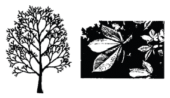
- 호랑가시나무(Ilex cornuta)
- 박달나무(Betula schmidtii)
- 칠엽수(Aesculus turbinata)
- 양버들(Populus nigra)
(정답률: 66%)
22. 다음 중 정형식 식재의 설명으로 옳은 것은?
- 정형식 식재와 자유식재는 같은 양식이다.
- 자연의 풍경과 같은 비정형식인 선에 의한 식재를 말한다.
- 정형식 식재의 기본 유형은 군식, 산재식재, 배경식재 등이 있다.
- 열식은 동형, 동 수종을 직선상으로 일정한 간격에 식재하는 수법을 말한다.
(정답률: 64%)
23. 그림과 같이 2그루 심기로 배식설계를 할 때 가장 적합한 조합은?(단, 활엽수와 침엽수의 구분 없음, 보기는 A(관목) - B(교목)의 조합순서이다)
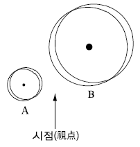
- 수양버들 - 은행나무
- 은행나무 - 전나무
- 전나무 - 명자나무
- 명자나무 - 서양측백
(정답률: 59%)
24. 다음 설명의 ( )안에 적합한 값은?
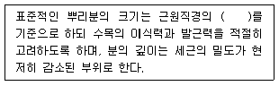
- 1배
- 2배
- 4배
- 8배
(정답률: 73%)
25. 수목의 생태 분류상 “음수”로 분류할 수 없는 것은?
- 사철나무(Euonymus japonicus)
- 전나무(Abies holophylla)
- 자작나무(Betula platyphylla)
- 솔송나무(Tsuga sieboldii)
(정답률: 53%)
26. 무궁화(Hibiscus syriacus)의 특성에 대한 설명으로 옳은 것은?
- 수형은 평정형이다.
- 생태 특성상 음수이다.
- 내한성과 내공해성이 약하다.
- 품종이 많고, 여름에 개화한다.
(정답률: 65%)
27. 수고가 높은 교목을 열식하여 수직적 공간감을 느끼게 하려고 할 때 가장 적합한 수목은?
- 미선나무(Abeliophyllum distichum)
- 자귀나무(Albizia julibrissin)
- 모감주나무(Koelreuteria paniculata)
- 메타세콰이아(Metasequoia glyptostroboides)
(정답률: 73%)
28. 토양 단면에 대한 설명으로 틀린 것은?
- 부식질은 홑알구조를 형성하므로 토양의 물리적 성질이 불량하다.
- 표층토인 A층은 낙엽, 낙지가 분해되어 있는 층으로 암흑색에 가깝다.
- 부식은 미생물을 활기 있게 만들고, 유기물의 분해를 촉진한다.
- 자연림에서는 교목류의 근계가 B층에도 분포하고 있다.
(정답률: 50%)
29. 다음 설명에 적합한 식물은?
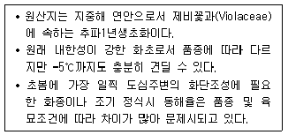
- 글라디올러스
- 채송화
- 팬 지
- 페튜니아
(정답률: 59%)
30. 무성(영양)번식 중 삽목(Cutting)에 관한 설명으로 틀린 것은?
- 삽목의 발근촉진물질은 비나인(B-nain)이 대표적이다.
- 식물체의 재생능력을 이용하여 인위적으로 번식시킬 수 있는 방법이다.
- 식물체의 일부를 상토에 꽂아 절단면으로부터 부정근을 발생시킨다.
- 삽수의 제조는 식물의 종류에 따라 다르나 적어도 상하 2개의 눈을 부착하여 조제한다.
(정답률: 46%)
31. 종-면적 곡선(Spedies-area Curve)으로 평가할 수 있는 것은?
- 종 간경쟁
- 종 풍부도
- 개체군 분포
- 개체군 증식
(정답률: 45%)
32. 여름철에 개화되는 수종은?
- 산수유(Cornus officinalis)
- 능소화(Campsis grandifolira)
- 태산목(Magnolia grandiflora)
- 금목서(Osmanthus fragrans)
(정답률: 61%)
33. 일반적으로 잔디 초지(피복) 조성 속도가 가장 빠른 종류는?
- 한국잔디
- 벤트(Bent) 그래스
- 버뮤다(Bermuda) 그래스
- 켄터키(Kentucky) 블루그래스
(정답률: 48%)
34. 다음 중 “좋은 식재”의 방향이라고 볼 수 없는 것은?
- 무조건 수고가 큰 나무를 심도록 한다.
- 필요 이상의 나무는 심지 않도록 한다.
- 생태적으로 적합한 장소에 심도록 한다.
- 시각적 특성을 충분히 고려하여 심도록한다.
(정답률: 76%)
35. 개잎갈나무(Cedrus deodara)의 특징으로 옳지 않은 것은?
- 상록침엽교목
- Cedrus의 용어는 kedron(향나무)에서 유래
- 원추형으로 직립하며, 밑가지가 아래로 처짐
- 심근성 수종으로 바람에 강하며, 수관폭이 넓고 생장이 느림
(정답률: 46%)
36. 조경식물의 성상에 대한 설명이 틀린 것은?
- 상록수와 낙엽수의 구분은 절대적이 아니며, 기후, 계절, 나무의 입지환경에 따라 상록수가 낙엽수가 되기도 한다.
- 식물학상 침엽수는 피자식물에, 활엽수는 나자식물에 포함된다.
- 등, 마삭줄, 담쟁이덩굴 등 스스로 서지못해 기거나 타고 오르는 나무를 만경목이라 한다.
- 교목의 특징을 지니나 일반적으로 교목보다는 작고 관목보다는 큰 나무를 아교목이라 한다.
(정답률: 69%)
37. 다음과 같은 특징을 갖는 수종은?
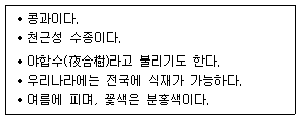
- 박태기나무(Cercis chinensis)
- 자귀나무(Albizia julibrissin)
- 회화나무(Sophora japonica)
- 아까시나무(Robinia pseudoacacia)
(정답률: 50%)
38. 부들(Typha orientalis)의 특징으로 틀린 것은?
- 부들과(科)이다.
- 침수식물에 속한다.
- 물가에 식재하고 분주로 번식한다.
- 꽃은 황색이고, 열매는 원통형이다.
(정답률: 61%)
39. 옥상녹화를 위해 구조적으로 가장 먼저 고려되어야 할 항목은?
- 방수
- 배수
- 하중
- 바람의 영향
(정답률: 67%)
40. 수목을 이식한 이후 실시하는 작업이 아닌 것은?
- 줄기 감기
- 비료주기
- 지주 세우기
- 뿌리돌리기
(정답률: 71%)
3과목: 조경시공
41. 다음에서 설명하는 장비는?
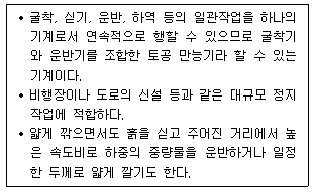
- 파워쇼벨
- 드래그라인
- 그레이더
- 스크레이퍼
(정답률: 50%)
42. 다음 설명에 해당되는 콘크리트의 성질은?
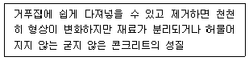
- 반죽질기(Consistency)
- 시공연도(Workability)
- 마무리용이성(Finishability)
- 성형성(Plasticity)
(정답률: 55%)
43. 각 변이 30cm 정도의 4각추형 네모뿔의 석재로서 석축공사에 사용되는 것은?
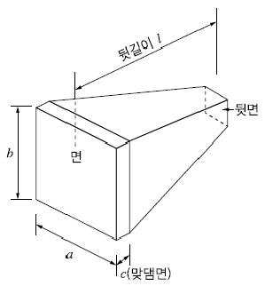
- 사석
- 전석
- 야면석
- 견치석
(정답률: 65%)
44. 그림과 같은 계획 표고의 토량을 구하는데 적합한 공식은?
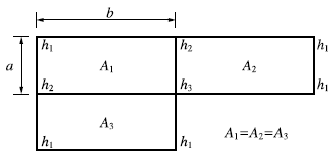
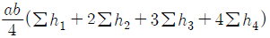
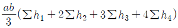
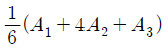
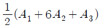
(정답률: 53%)
45. 훼손지의 보행로 정비 시 “목재 계단로”시공과 관련된 설명으로 가장 거리가 먼 것은?
- 비탈면의 암석이나 돌 등을 제거하고 평탄하게 기반정지작업을 한다.
- 우수에 의한 침식방지, 식생의 보전, 이용자의 안전확보 측면에서 기울기 15% 이상의 비탈면에 설치한다.
- 통나무 계단은 수직박기용 통나무를 항타하여 박은 후 수평깔기용 통나무를 1~2단으로 단단히 결속하고 흙을 뒷채움하여 다진다.
- 계단 최상ㆍ최하단 경계부 밖의 노면은 자연스럽게 마감처리 한다.
(정답률: 44%)
46. 재료의 기계적 성질 중 작은 변형에도 파괴되는 성질을 무엇이라 하는가?
- 강성
- 소성
- 취성
- 탄성
(정답률: 62%)
47. 다음과 같은 네트워크 공정표로 나타나는 공사의 공기를 1일 단축하고자 한다. 일정단축을 위하여 공정을 조정할 때 적절한 것은? (단, 모든 공정은 1일 단축 가능하다.)
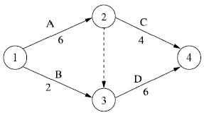
- A를 1일 줄인다.
- B를 1일 줄인다.
- C를 1일 줄인다.
- B, C를 각각 1일 줄인다.
(정답률: 58%)
48. 합성수지를 이용한 건설재료에 관한 설명으로 가장 거리가 먼 것은?
- 내수성이 양호하다.
- 열에 의한 팽창 및 수축이 크다.
- 가공성이 크며 성형 가공이 용이하다.
- 탄성계수가 금속재에 비해 매우 크다.
(정답률: 48%)
49. 교호수준측량의 결과가 그림과 같을 때, A점의 표고가 55.423m라면 B점의 표고는?
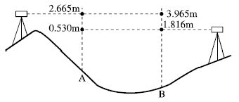
- 52.923m
- 53.281m
- 54.130m
- 54.137m
(정답률: 32%)
50. 다음 설명의 ( )안에 적합한 것은?
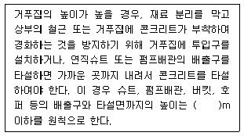
- 1.5
- 1.8
- 2.0
- 2.5
(정답률: 50%)
51. 목재의 성질에 관련 설명으로 가장 거리가 먼 것은?
- 섬유포화점에서의 함수율은 10% 정도이다.
- 일반적으로 대부분의 침엽수재는 구조용재로 사용된다.
- 목재의 비중이 증가함에 따라 강도는 증가한다.
- 전건재의 비중은 목재의 공극률에 따라 달라지는데 실적률만의 진비중은 1.50 정도이다.
(정답률: 43%)
52. 일반적으로 사면의 안정상 가장 위험한 경우는?
- 사면이 완전히 포화상태일 경우
- 사면이 완전 건조되었을 경우
- 사면의 수위가 급격히 상승할 경우
- 사면의 수위가 급격히 내려갈 경우
(정답률: 43%)
53. 계획대상지의 부지정지 및 다짐에 필요한 성토량이 1,000m3이다. 인접지역의 토양을 적재용량이 10m3인 덤프트럭으로 운반할 때 소요되는 덤프트럭은 모두 몇 대인가? (단, L=1.15, C=0.9인 경우)
- 100
- 111
- 115
- 128
(정답률: 35%)
54. 구조물에 작용하는 하중(荷重)에 대한 설명으로 가장 거리가 먼 것은?
- 구조용 재료는 장기하중 보다 단기하중에 좀 더 유리하게 적용하고, 재료의 설계용 허용강도는 경제적인 측면에서 단기하중 때 더 크게 취하도록 하고 있다.
- 풍하중은 구조물에 재난을 주는 빈도가 가장 많은 하중이며, 구조물의 역학적 해석에 있어 하중의 결정에 세심한 주의와 판단을 필요로 한다.
- 이동하중은 구조물에 항상 작용하는 하중이 아니라 시간적으로 달라지는 하중을 말하며 활하중 또는 적재하중 이라고도 한다.
- 집중하중은 구조물의 자중이나 그 위에 높은 물체의 하중이 어떤 범위 내에 분포하여 작용하는 하중을 말한다.
(정답률: 33%)
55. 강재의 열처리 방법으로 가장 거리가 먼 것은?
- 단조
- 불림
- 담금질
- 뜨임
(정답률: 56%)
56. 조경공사 시공계약 방식 중 공동도급(Joint Venture Contract)에 대한 설명으로 가장 거리가 먼 것은?
- 융자력 증대
- 위험의 분산
- 이윤의 증대
- 시공의 확실성
(정답률: 56%)
57. 다음 그림과 같은 지역의 면적은?
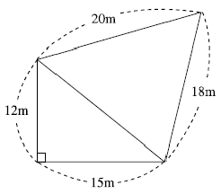
- 246.5m2
- 268.4m2
- 275.2m2
- 288.9m2
(정답률: 25%)
58. 공시원가를 계산할 때 수량의 계산 시 올바른 방법은?
- 지정 소수의 이하 2위까지 하고, 끝수는 4사5입한다.
- 지정 소수의 이하 1위까지 하고, 끝수는 4사5입한다.
- 지정 소수의 이하 2위까지 하고, 끝수는 버린다.
- 지정 소수의 이하 1위까지 하고, 끝수는 버린다.
(정답률: 51%)
59. 어린이 놀이시설에 다른 재료에 비해 목재를 많이 사용하는 이유로 가장 거리가 먼 것은?
- 경도와 강도가 크다.
- 취급, 가공이 쉽다.
- 열의 전도율이 낮고 충격의 흡수력이 크다.
- 온도에 대한 신축이 비교적 작다.
(정답률: 48%)
60. 지하 배수 관거에서 이상적인 유속의 범위는?
- 0.3~0.8m/s
- 1.0~1.8m/s
- 2.0~2.5m/s
- 2.6~3.5m/s
(정답률: 60%)
4과목: 조경관리
61. 다음 중 수목과 주요 가해 해충의 연결이 틀린 것은?
- 잣나무, 소나무 - 솔나방
- 벚나무, 졸참나무 - 매미나방
- 사과나무, 느티나무 - 독나방
- 낙엽송, 섬잣나무 - 미국흰불나방
(정답률: 45%)
62. 15,000m2의 잔디밭과 수고 3m의 살구나무 150주가 식재되어 있는 곳에 약제를 살포하고자 한다. 아래 표를 참조할 때 총 소요인원은?(오류 신고가 접수된 문제입니다. 반드시 정답과 해설을 확인하시기 바랍니다.)
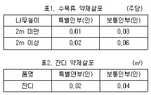
- 15명
- 21명
- 96명
- 102명
(정답률: 44%)
63. 수목식재 후 관리를 위해 지주목 설치를 통해 얻을 수 있는 특징에 해당하지 않는 것은?
- 수간의 굵기가 균일하게 생육할 수 있도록 해준다.
- 수고 생장에 도움을 주며 지지된 수목의 상부에 있어서 단위횡단면 당 내인력(耐引力)이 증대된다.
- 지상부의 생육에 있어서 흉고직경 생장을 비교적 작게 하는 동시에 상부의 지지된 부분의 생육을 증진시킨다.
- 바람에 의한 피해를 줄일 수 있으나, 지상부의 생육에 비교하여 근부(根部)의 생육에는 영향을 주지 않는다.
(정답률: 46%)
64. 다음 설명에 해당하는 조명등은?
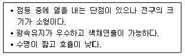
- 백열등
- 수은등
- 나트륨등
- 금속할로겐등
(정답률: 52%)
65. 솔나방의 발생 예찰을 하기 위한 방법 중 가장 좋은 것은?
- 산란수를 조사한다.
- 번데기의 수를 조사한다.
- 산란기 기상 상태를 조사한다.
- 월동하기 전 유충의 밀도를 조사한다.
(정답률: 56%)
66. 다음의 특징 설명에 해당하는 잔디병은?
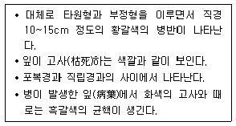
- 설부병(Snow Mold)
- 라지 패치(Large Patch)
- 브라운 패치(Brown Patch)
- 춘계 황화병(Spring Dead Spot)
(정답률: 64%)
67. 비탈면에서 토사의 유출과 무너짐을 방지하기 위해 옹벽을 설치하였다. 다음 옹벽의 시공과 관리에 대한 방법으로 가장 적합한 것은?
- 옹벽을 설치할 때는 일반적인 안정성과 함께 전도, 미끄럼, 침하에 대한 안정성 등을 사전에 검토한다.
- PC앵커공법은 콘크리트 옹벽 뒷면의 지하수를 배수 구멍으로 유도시키고 토압을 경감시키는 방법이다.
- 중력식은 옹벽 자체 무게로 토압에 저항하는 것으로, 다른 형태에 비해 높이가 높은 경우에 사용되며, 저판에 의해 안정성이 유지된다.
- 옹벽의 보수ㆍ유지관리 방법은 다양하지만, 기능을 고려할 때 시간과 경비가 소요되더라도 새로 설치하는 것이 바람직하다.
(정답률: 48%)
68. 식재한 수목의 뿌리분 위에 토양을 짚, 낙엽등으로 멀칭(Mulching)함으로서 발생될 기대 효과에 해당되지 않는 것은?
- 잡초 발생이 억제된다.
- 병충해 발생이 많아진다.
- 토양의 비옥도가 증진된다.
- 토양표면의 경화를 방지한다.
(정답률: 66%)
69. 화단용 식물의 정식으로 옳지 않은 것은?
- 대낮보다 저녁에 실시한다.
- 화단의 중앙보다 주변부를 밀식한다.
- 잘 건조된 바닥에다 심은 후 관수한다.
- 옮겨심기는 화단의 중앙부에서 시작한다.
(정답률: 45%)
70. 늦서리(晩霜)의 피해를 입기 쉬운 것은?
- 백목련의 꽃
- 소나무의 열매
- 칠엽수의 동아(冬芽)
- 은행나무의 단지(短枝)
(정답률: 51%)
71. 조경수목의 전정 요령에서 정아우세성(정부우세성, 頂部優勢性)을 고려해야 한다. 다음 중 이 원칙을 올바르게 적용한 것은?
- 전정시 수목의 정단부를 무성하게 하기 위해 윗가지는 되도록 자르지 않는다.
- 윗가지는 강하게 자라므로 윗가지는 짧게 남기고, 아래가지는 길게 남긴다.
- 대부분의 수목은 윗가지보다 아래가지가 강하게 자라므로 아래가지를 강전정 한다.
- 위-아래가지 모두 생장이 균등하므로, 전정 작업은 공정 상 아래부터 위로 진행한다.
(정답률: 57%)
72. 농약 중독 시 응급처치 방법으로 부적절한 것은?
- 물이나 식염수를 마시게 하고 손가락을 넣어서 토하게 한다.
- 농약이 장으로 흡수되지 않도록 흡착제(활성탄, 목초액 등)를 소량 복용한다.
- 옷을 헐겁게 하고 심호흡을 시키되, 중독자가 움직이지 않도록 한다.
- 피부에 묻었을 때 비누를 사용하지 않고 흐르는 물로만 깨끗이 씻어낸다.
(정답률: 45%)
73. 다음 중 잔디의 생육상태를 불량하게 만드는 원인은?
- 잔디깎기
- 토양경화
- 배토작업
- 롤링(Rolling)
(정답률: 57%)
74. 블록포장 시 시공불량에 의한 파손 유형은?
- 블록 모서리 파손
- 블록 자체 부서지기
- 블록포장 요철 파손
- 블록 표면 시멘트 페이스트의 유실
(정답률: 47%)
75. 유희시설물의 점검주기로 가장 적당한 것은?
- 1개월
- 6개월
- 12개월
- 36개월
(정답률: 42%)
76. 시비 후 토양 속에서 용해되어 식물에 흡수되는 속도에 따라 속효성, 완효성, 지효성 비료로 분류 될 때, 다음 중 지효성(遲效性) 비료에 해당하는 것은?
- 요소
- 용성인비
- 퇴 비
- 석회
(정답률: 54%)
77. 토양의 부식에 대한 설명으로 틀린 것은?
- 토양의 완충능을 증대시킨다.
- 양이온 치환용량을 높인다.
- 토양입자를 입단구조로 개선시킨다.
- 미생물에 의하여 쉽게 분해되며, 유효인 상의 고정을 촉진시킨다.
(정답률: 29%)
78. 다음 중 제초제에 의한 제초 효과가 가장 높은 경우는?
- 우기 시
- 건조한 토양
- 사질토의 토양
- 고온 다습한 기후
(정답률: 53%)
79. 다음 중 살충제의 장기간 사용에 의한 부작용으로 가장 중요한 것은?
- 약해
- 기상변화
- 식물병의 발생
- 저항성 해충의 출현
(정답률: 60%)
80. 수목의 피해원인을 규명하는데 도움이 되는 조사항목으로 가장 거리가 먼 것은?
- 병징
- 환경
- 토양
- 관리장비
(정답률: 70%)